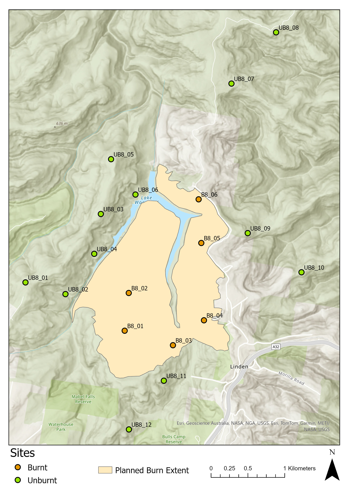

Background & Study Design
Project Overview
Over the past few years, Passive Acoustic Monitoring (PAM) and advances in Artificial Intelligence (AI) have transformed ecological research, enabling scientists to monitor wildlife at unprecedented spatial and temporal scales. At the same time, ecosystems worldwide are experiencing increasingly frequent and severe disturbance events, with wildfires being among the most significant. In Australia, hazard-reduction (HR) burning is widely used to reduce fuel loads, lower wildfire risk, and protect communities and infrastructure.
It is also often promoted as a tool to maintain ecosystem health, with burns planned around the dominant vegetation communities in the area. By using fire in an area where vegetation has evolved with fire, HRs can trigger stress responses such as mass flowering and fruiting events or the chemical responses required for many seeds in the seed bank to germinate. However, despite the widespread use of HR burns, the short-term effects of prescribed fire on local wildlife remain poorly understood. This project investigates how hazard-reduction burning influences bird activity in the Greater Blue Mountains. The region is one of Australia’s most significant areas for ecological diversity, one of the most fire-prone landscapes in the world, and one of the most extensively HR-burn-managed areas near Sydney.
Birds are among the most effective indicators of ecosystem condition. Occupying a range of niches from the forest floor to above the canopy, and eating everything from carrion and invertebrates to nectar and seeds, they perform crucial ecological services including pest control, pollination, seed dispersal, and bioturbation. Changes in bird communities can therefore provide valuable insights into how ecosystems respond to environmental change and disturbance.
Although the effects of fire on wildlife have been extensively studied, most research begins months or years after a fire has occurred. As a result, many studies can only compare burned and unburned sites after the disturbance. Ideally, ecologists would monitor both impacted and control sites before and after a fire using a well-replicated experimental design to gain a comprehensive understanding of the changes that have occurred at each site. Such studies are rare because they are often difficult to implement in the field. We have been able to achieve exactly that. Using a Beyond-BACI (Before–After Control–Impact) design, autonomous recording units were deployed across multiple burned and unburned sites before and after a planned hazard-reduction burn. This design provides a unique opportunity to separate the effects of fire from natural variation through time.
Sound recordings collected at these sites are analysed using ecoacoustic methods. Because acoustic datasets are often enormous, manually identifying every bird vocalisation is impractical. Instead, we use BirdNET, an AI classifier, to detect and identify bird vocalisations and quantify patterns of bird activity across sites and sampling periods. To ensure results are reliable, we subsample detections and verify that the identifications made by BirdNET are correct.
Through this project, students will have the opportunity to develop and test their own ecological questions, analyse real-world acoustic datasets, and evaluate how prescribed burning influences native bird communities. In doing so, you will gain experience with modern ecological monitoring techniques and explore the growing role of AI in conservation and environmental research.
Beyond-BACI
The design is intentionally asymmetrical.
Rather than use a simple BACI which follows a 1:1:1:1 idea (1 Before dataset and 1 After dataset at 1 Control site and 1 Impact site), this project uses Underwood’s Beyond-BACI design:
- More than one impact site and more than one control site
- More than one “before” dataset and more than one “after” dataset
- Longer monitoring at both control and impact sites, allowing the effects of the disturbance (fire) to be statistically separated from the effects of time
This is considered the “Holy Grail” of disturbance ecology — very difficult to implement in the field, but it offers the greatest statistical and inferential power.
Underwood, A. J. (1992). Beyond BACI: The detection of environmental impacts on populations in the real, but variable, world. Journal of Experimental Marine Biology and Ecology, 161(2), 145–178. https://doi.org/10.1016/0022-0981(92)90094-Q
Thought Exercise
This is a small-scale study. Consider the benefits and limitations of this.
Site Selection
- All sites are located in dry shrubby sclerophyll forest within the Blue Mountains National Park boundary
- Sites are placed at least 50 m off trails (100 m was the original target, but this varied on the ground)
- Trails used for access are closed to vehicles (except authorised vehicles); some see moderate hiker/mountain-biker traffic
- Recorders are spaced ≥500 m apart, adapted from standard camera-trap placement methods
- 18 sites total:
- 6 sites within the planned burn extent:
B8_01–B8_06 - 12 sites outside the burn extent:
UB8_01–UB8_12, placed at varying distances from the burn perimeter
- 6 sites within the planned burn extent:
Fires were ignited with drip torches along south and east trails. No aerial ignition was used. Fire was left to spread naturally north and west, with a lake acting as a natural firebreak. Southern border of fire extent is one trail. Eastern border is housing and then a private road as you go north. Total planned burn extent: ~92 hectares.
Study Sites
